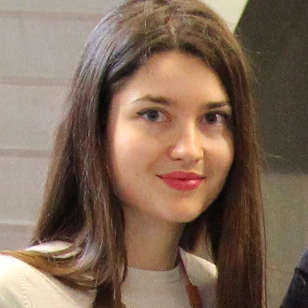

Team
Frank Rudzicz is an international expert on speech technology for individuals with speech disorders. He is the President of the international joint ACL/ISCA special interest group on Speech and Language Processing for Assistive Technology, a Young Investigator of the Alzheimer’s Society a Scientist at Toronto Rehab, and an Assistant Professor at the University of Toronto.
 Liam Kaufman has published peer reviewed articles in cognitive neurology, human computer interaction and neuroscience. He is an experienced software developer, and has successfully launched Understoodit, a startup acquired by EventMobi, and featured in The Toronto Star, CTV News, and TechCrunch.
Liam Kaufman has published peer reviewed articles in cognitive neurology, human computer interaction and neuroscience. He is an experienced software developer, and has successfully launched Understoodit, a startup acquired by EventMobi, and featured in The Toronto Star, CTV News, and TechCrunch.
 Katie Fraser has published a number of peer-reviewed papers in both computer science conferences and neuroscience journals about her research on the automatic detection of dementia, and post-stroke aphasia. She was awarded a Google Canada Anita Borg scholarship and an NSERC scholarship and was named a 2015 MIT Rising Star in Computer Science.
Katie Fraser has published a number of peer-reviewed papers in both computer science conferences and neuroscience journals about her research on the automatic detection of dementia, and post-stroke aphasia. She was awarded a Google Canada Anita Borg scholarship and an NSERC scholarship and was named a 2015 MIT Rising Star in Computer Science.
 Maria Yancheva conducts research on the automatic detection of dementia longitudinally, for which she was awarded an NSERC scholarship. She has experience developing software for Scotiabank’s trade floor, and has co-founded GroceryGo, a startup featured on BlogTO.